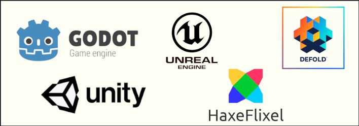

¿Qué son los motores de desarrollo de videojuegos?
Los motores de desarrollo de videojuegos son programas o herramientas que permiten crear videojuegos de forma más fácil y rápida. En lugar de programar todo desde cero, estos motores ya incluyen funciones listas para usar, como gráficos, físicas, sonido, animaciones y control del jugador.
Un motor de juego actúa como la base del videojuego, ayudando a que todo funcione correctamente. Por ejemplo, se encarga de cómo se mueve un personaje, cómo se ven los objetos en pantalla o cómo interactúan los elementos del juego.
Gracias a los motores, tanto principiantes como profesionales pueden desarrollar juegos para diferentes plataformas como celulares, computadoras o consolas.
En resumen, un motor de videojuegos es como una "caja de herramientas" que facilita la creación de juegos, ahorrando tiempo y esfuerzo.
Breve video sobre cuál escoger para empezar